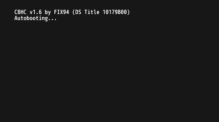
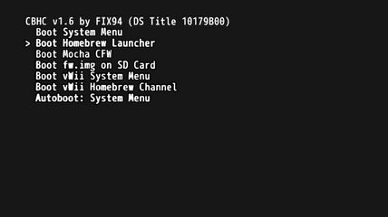

Desinstalar Coldboot Haxchi (CBHC)
Al instalar Coldboot Haxchi el sistema de la Wii U inicia automáticamente con Haxchi (icono DONT TOUCH ME). Desinstalar Coldboot Haxchi es hacer que el sistema de la Wii U inicie automáticamente con la aplicación Wii U Menu (como originalmente es).
Desinstalar Coldboot Haxchi se resume en ejecutar la aplicación CBHC Installer desde el Homebrew Launcher y presionar un par de botones.
Archivos necesarios
Para asegurar que todo salga bien debes preparar y revisar algunos archivos en la tarjeta SD. Así que apaga la consola, saca la tarjeta SD de la Wii U y ponla a tu PC para copiar archivos.
Descarga
- CBHC (Instalador de Coldboot Haxchi).
- Clic en el botón Download.
- Homebrew Launcher.
- Únicamente necesitas el archivo
homebrew_launcher.v1.5.zip.
Colocación
En toda la tarjeta debe existir una sola carpeta wiiu. En general siempre se combina la carpeta wiiu del archivo .zip que acabas de descargar con la carpeta wiiu que ya tienes en la raíz de la tarjeta SD, excepto si es la primera vez que colocas una carpeta wiiu en la raíz de la tarjeta SD.
info.json y manifest.install no son necesarios, los puedes omitir y eliminar sin ningún problema.- En este punto debes tener la tarjeta SD conectada a una PC para colocar los archivos.
- Descomprime el archivo
homebrew_launcher.v1.5.zip. - Copia la carpeta
wiiua la raíz de la tarjeta SD. - Descomprime el archivo
cbhc.zip. - Copia la carpeta
wiiua la raíz de la tarjeta SD. - Extrae la tarjeta SD de forma segura del dispositivo que usaste para hacer la copia de archivos e introdúcela en la ranura de la Wii U con la consola apagada.
Desactivar el coldboot
Instrucciones
- En este punto debes tener la Wii U apagada con la tarjeta SD introducida.
- Enciende la Wii U. Cuando aparezca el mensaje de CBHC presiona el botón HOME del Wii U GamePad.
- En el menú de Coldboot Haxchi usa las flechas del D-Pad del Wii U GamePad, selecciona Boot Homebrew Launcher y presiona el botón A para iniciarlo.
- Dentro del Homebrew Launcher navega por el menú usando la pantalla táctil del Wii U GamePad, selecciona CBHC y toca en Load para cargar la aplicacion.
- Usa las flechas del D-Pad del Wii U GamePad para navegar, pon el cursor en el juego en el que se encuentra instalado Haxchi (icono DONT TOUCH ME).
- Presiona el botón A y lee las advertencias.
- Presiona el botón B para desinstalar Coldboot Haxchi y espera un momento.
- Completada la desinstalación, la consola cargará el menú de la Wii U.
- Apaga la consola.
- Enciende de nuevo la Wii U.
- Si Coldboot Haxchi se desinstaló correctamente, el mensaje de CBHC (fondo negro, letras blancas) ya no debe aparecer al encender la consola.


- En este punto ya desinstalaste Coldboot Haxchi correctamente.
Desinstalar Haxchi
Instrucciones
- En este punto ya debiste haber desinstalado Coldboot Haxchi correctamente.
- Abre el icono de Configuración de la consola.
- Entra en Gestión de datos.
- Luego en Transferir, copiar o borrar datos.
- Selecciona Memoria de la consola, en la lista busca el icono de Haxchi (DONT TOUCH ME).
- Selecciona el icono de Haxchi (DONT TOUCH ME) y vuelve a selecciónalo para que salga el botón Borrar.
- Toca el botón de Borrar y después el botón Sí.
- Espera a que se borre, y después toca en Aceptar.
- En este punto ya desinstalaste Haxchi (icono DONT TOUCH ME) correctamente.
- Si quieres eliminar una aplicación homebrew instalada en el menú de Wii U como el Homebrew Launcher, WUP Installer GX2 o NUSspli puedes borrarla sin ningún problema desde la gestión de datos en la configuración de la consola.
- Opcionalmente haz una copia de respaldo de todo el contenido de la tarjeta SD y borra el contenido de la tarjeta SD. Puedes formatear la tarjeta SD para dejarla limpia.
Video mostrando el proceso
Con los pasos anteriores ya puedes instalar en limpio cualquier otra modificación. No es necesario formatear la consola ni hacer nada adicional.